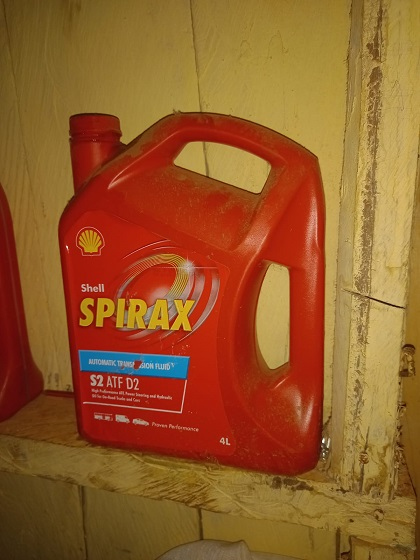
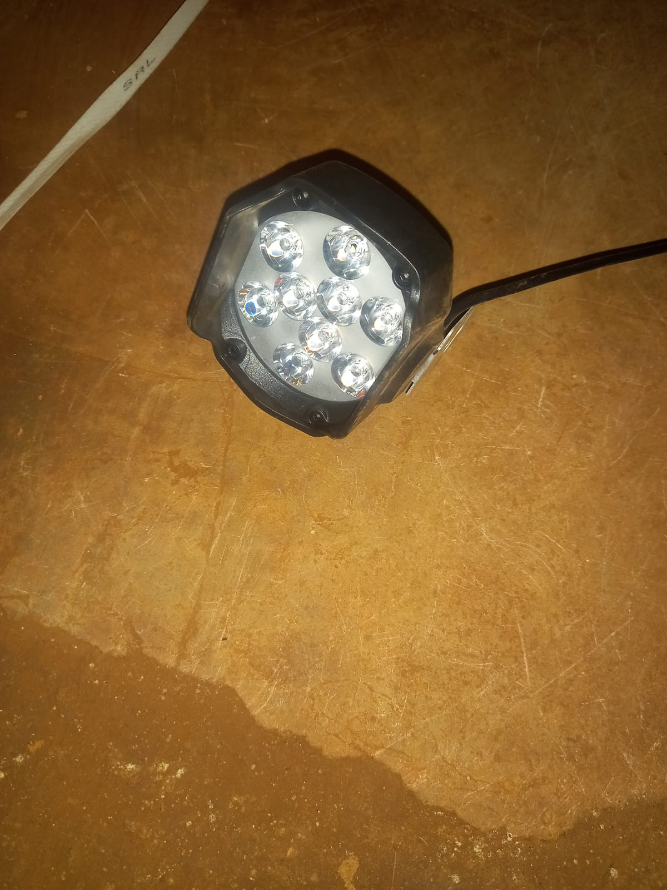

chap chap is an E-commers platform that connects buyers globaly
we sell quality spares made from INDIA and JAPAN
for the retail who wholesale with us we give out discount of 20%
and to the buyers who do not retail we give a discount of 10%
chap chap wholesale is loccated along KISUMU -BUSIA ROAD
adjuscent to UGENYA BOYS HIGH SCHOOL near Ugunja market
This tyre is designed for 80% off-road use and will be very effective on sand, mud or over small obstacles
And is made in INDIA
high quality ryme made in JAPAN by the hertex
this is YOG spefically fr HONDA
Best lubricant oil for engines a product from shell
headlamp with high quality brightness